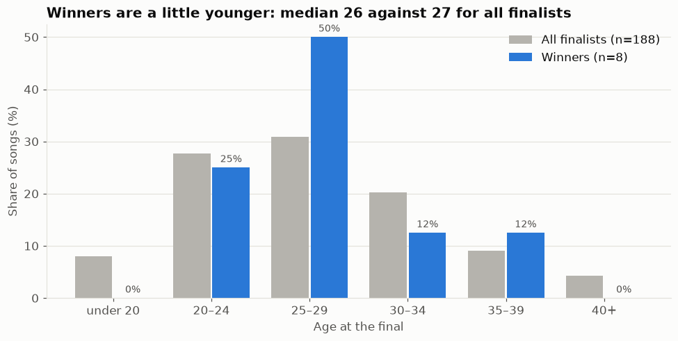
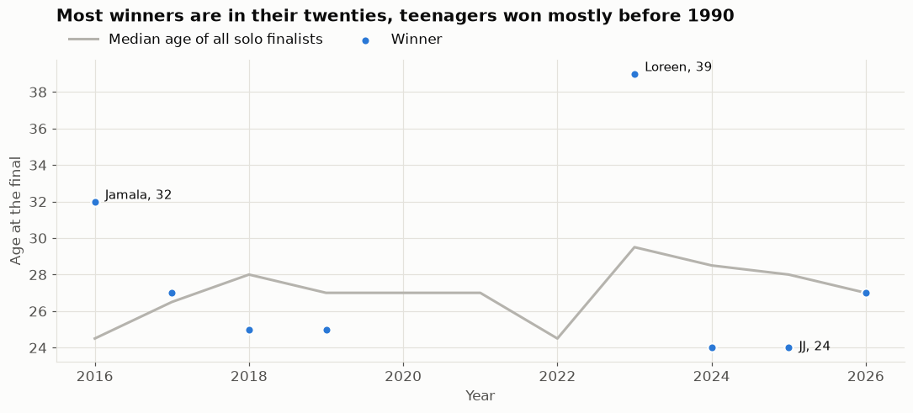
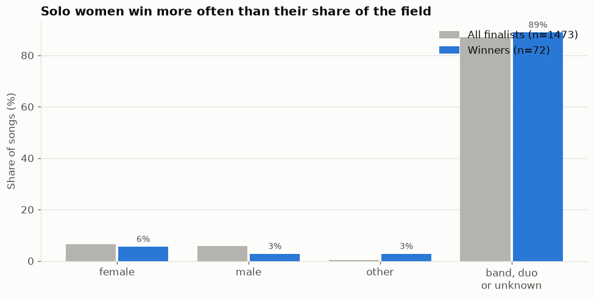
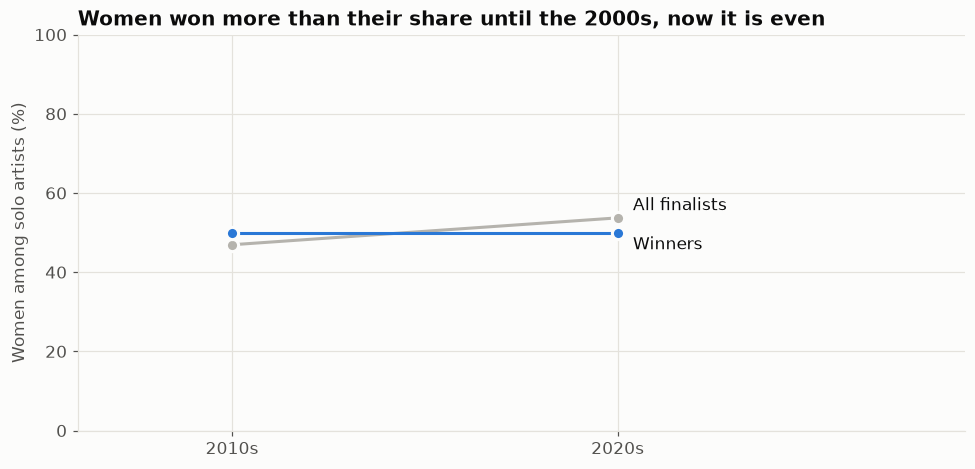
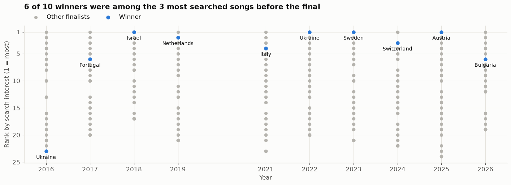

Motivation
Since 1962, every year European coutry gather together together to compete for the best song. Eurovision is in the center of attention each ... and betting markets start booing around that time with predictions of winners.
But are we aware of who should win statistically? In this project we analized previoous Eurovion competetions to try to get valuable insights on trends, crowd and jurys' favorites, and general statistics that define winners.
We wanted to benefit prediction market users to make smarter bets, as well as provide insights for competing Eurovision artists on what are theit statistical advntages/disadvatages.
we also wanted to explore how shared borders and langugaes between countries influnce votings.
Dataset description
One row is one directed pair in one contest: who gives, who receives, how many points, jury or televote. Finals only, 2016 to 2026 (2020 was cancelled).
Sources
- Votes and entries: the Spijkervet Eurovision dataset up to 2023, eurovisionworld.com from 2024.
- Country relationship: CEPII GeoDist, with distance, shared border, shared language and colonial ties.
- Past points: all voting history since 1957, used only to say how much two countries liked each other before.
- Attention: Google Trends, per voting country, web and YouTube search, for the 30 days before each final.
- Lyrics: mood, theme and repetition of each song, labelled by a language model from the LRCLIB lyrics database.
- Artists: age and sex from Wikidata.
We deliberately do not use YouTube views. They are only available as of today, so a winner would get views it earned because it won.
Visualizations
We looked at how winners are distributed across categories, and which factors are most associated with winning, i.e. with the highest finalist-to-winner conversion.




We also looked at how the language and content of the lyrics relate to winning, using lyrics from the 2008–2026 contests (2010 is missing: no lyrics data).

We used Google searches to measure pre-final interest in each song (Google Trends, 2016–2026). These features later turned out to clearly improve our predictions.

Bonus: the countries with the most wins.

Prediction results
Who explains the points?
Share of the points explained on years the model never saw:
The song (the entry itself) explains 25 % of the jury points and 40 % of the televote points. The relationship between countries explains four and a half times more for the public than for the jury. Juries judge the song. The public also votes for its friends.
Strongest friendships
Points given beyond what the song earned, at least three meetings: Greece to Cyprus +10.5 and North Macedonia to Albania +10.4 in the televote, Montenegro to Serbia +9.8 in the jury.
Can we forecast the ranking?
We predict each year without ever seeing it, and measure how far off the predicted place is. Random guessing is off by 8.5 places for the jury and 8.4 for the televote.
| Model | Jury error | Televote error |
|---|---|---|
| Chance | 8.51 | 8.43 |
| Country relationships only | 6.77 | 6.41 |
| + Google Trends | 6.40 | 5.56 |
Relationships plus search interest place entries 2.1 places (jury) and 2.9 places (televote) closer to their real rank than chance, using only data that exists before the final. For comparison, Adamska and Reiss (2025) report 6.07 against 8.55 for chance, but for the combined place in 2008 to 2024, a different target and period.
Our win probabilities are not reliable, so we do not show them.
Technical background
The full method is in the technical report (PDF).
Data
One row is one voter giving points to one finalist in one year, as jury or as public. Zeros stay in, so every voter has a row for every other finalist. Ten finals give 19,774 rows but only 257 entries.
The pipeline runs with one command on Linux and Windows and gives the same results on both. Every raw file is pinned by a checksum, and 85 tests run offline.
Validation
Every model is trained on nine finals and tested on the tenth, once for each year. A random split would put votes from the same final into both training and test. Missing values are filled with the median of the training years.
Splitting a vote
Three ridge regressions per vote type: one sees only the entry, one only the relationship between the two countries, one both. The entry is measured by the receiver effect: the mean of what all other voters gave the same entry. The differences in R² between the three fits give the share of the entry, the share of the relationship and their overlap. Gradient boosting serves as a check.
The points A gave B beyond what the entry model predicted, averaged over all finals they met in, is the affinity of the pair. We only list pairs that met at least three times.
Forecast
A forecast may only use what exists before the final, so it never sees the receiver effect or the semi-final result. Ridge, gradient boosting and a random forest were fitted on five sets of inputs. Summing the predicted points per entry gives a ranking. The rank error is the mean distance between predicted and actual place, compared with 1,000 random rankings per final.
Limits
- The receiver effect also carries the bloc votes of other voters, so the entry share is probably too high and the relationship share too low.
- The best forecast was picked among five input sets on the same test years, so its gain is a little optimistic.
- Russia has no rows after 2021, Belarus none after 2019.
Future improvements
- Audio features. The published baseline uses the sound of the song, which we have not added.
- Better entry features. Lyrics and running order did not help the trees. A model that handles entry-level features properly might.
- More Trends coverage. 128 panel rows have no search data because nothing was queried for them.
- Calibrated win probabilities. Entries with a predicted chance above 50 % won only one time in eight. The model needs recalibration before we can show them.
- More history. Only ten contests have separate jury and televote data. Every new contest adds 2,000 rows.
- Semi-finals. After the contest, their points could be added to the explanation.
- A model made for rankings. Ours predicts points and sums them per entry.
- An interval for the split. A bootstrap would show how certain the shares are.
- Scores before 2016. The combined points of earlier finals could be used as well.